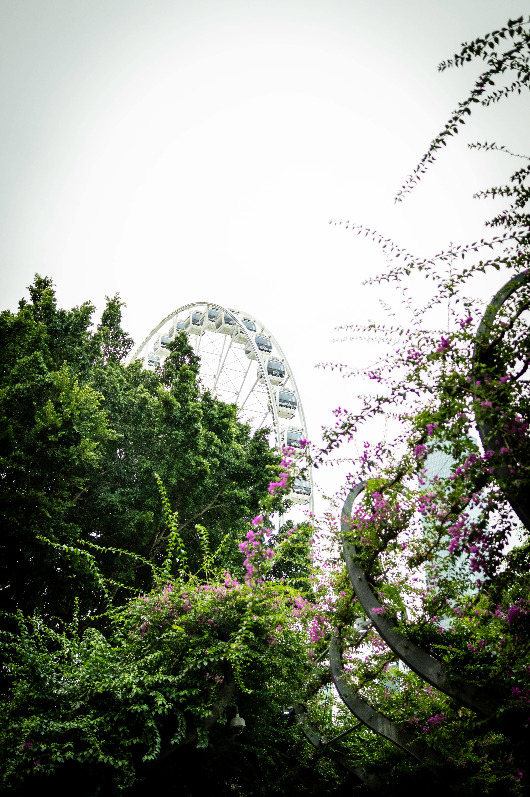

Hi guys!
This is Abby, from Abby's life, I just got back from my trip to Brisbane, Australia. (Thank you so, so, so mutch to fake makeup for sponsering my first week in Australia, whice I will be talking more about in a later blog, so keep your eyes out for that) Anyway, after the first week I ended up staying longer, something you would know if you followed my insta (@afakename). I promised I would tell you more about what I did, and what I recommend you doing on your trip to Bristband. As some of you know, me and Jack are trying to save mony to buy a house, so we did try to not spend to mutch mony on the trip.
Where to stay?
First off, where should you stay? Well, I really recomand you stay in the South bank earea, why? First off, it’s right in the middle of the city, and secend they have loads to do there. Thired, there is lots of cheap, or even free stuff to do there as well! Not going to say where we stayed for privecy reasons, but you can just google hotells Brisbane and you will get a bunch og options.
Day One
So, first day of the trip me and Jack went to the Queensland Museum, the perfect place for a history buff, or even if you just like to learn about new tings. Its right on the south bank, and has lots of exibits that are constently changing. Jack loved the dinosaurs and wildlife exibits, while i really liked the guided tours of Say Our Names, where you get to hear personal insights and storys from the south sea ilanders. You ready to hear the best part? It’s Free! :D We would never find something like that in the US! Just don't make our mistake, we didnt cheak the website beforehand and lost out on a few things you had to prebook :( After the museum we ended up walking overt the South Bank Parklands, a must visit for, well, everyone. Theres just so mutch to do there. When we where there we went to the Brisbane sign for pictures and the view. After we walked over to faris whele lokated just nearby, it had beautifull views just like the hole park did. We took a beautifull and romantic walk along the bougavillie lined path going through the park, a wonderfull way to walk between the different tings in the park. We then meet up with Jack’s sister and went shopping, ending the day at a local resturant.
Day 2
On the second day it was crazy hot, so we ended up spending the hole day at the Streets Beach over at the South Bank parklands, it was over 30 degrees for most of the day, so even the smal walk from the hotell to the park made us sweat like pigs. Lukely it ended up cooling down later, so we got to go to the rainforest walk nearby. We where also able to take a quick visit to the state library later in the day. Jack is orignally from Brisbane so we where able to do most tings there, there might be restictions if you go there tho and aren’t from Brisbane.
Day 3 and 4
Day 3 and 4 of the trip where spent with Jack’s family, now, they are a bit more privet (at least compered to me and Jack) so I won’t go to in detail with what we did with them out of respect. So in very broad strokes.. Day 3: We went to the Gold Coast, me, Jack’s mom and Tommy, Lilly’s husband went shopping, and went to the beach, where Tommy gave me surfing lessons. While Jack, his dad and Lilly played golf. We stayed at the Gold Coast overnight. Day 4: We went down to the Currumbin Wildlife Sanctuary, because how can you vidit Australia without seeing a Koala. Then we drove back up to Brisbane because the next day was a big one.
Day 5
There is something about this trip I haven’t told you guy’s about. There is actully a nother resone we did this trip, on day five, me, Jack and his parent’s went looking at houses! Yes, that’s right, me and Jack are thinking of moving down to the land down under. Now this blog is already way to long, so I will make a vidio talking about this instead. It's linked down bellow. If you want to get updates faster then go follow my sosials, linked down bellow. Can't wait to se you guys next again week. Make sure you leav you'r thought on this all down bellow. Lots of Love to all of you and have a awsome week <3